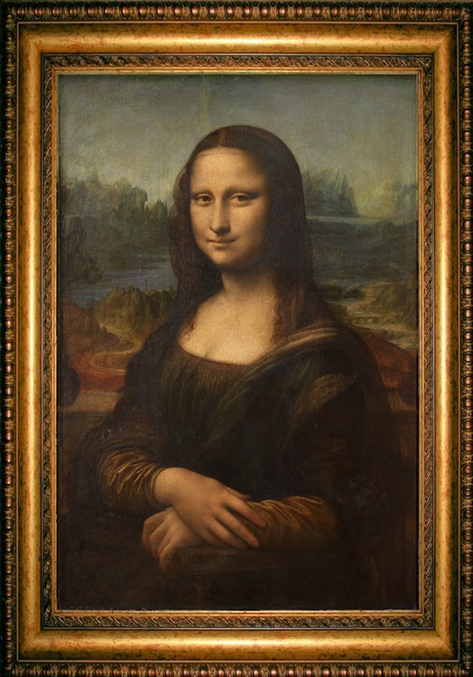

El renacimiento
movimiento cultural, artístico, científico y filosófico que tuvo lugar en Europa durante los siglos XIV al XVII.
¿Que fue el renacimiento?
El nombre de renacimiento alude al redescubrimiento de la cultura greco-romana y la filosofía clásica, pues este movimiento fue un retorno a la antigüedad, lo que significó una revalorización de sus mitos, discursos y filosofía, luego de siglos de pensamiento dogmático religioso.
Este periodo representa una transición de la edad media a la edad moderna, pues tuvo un impacto en muchos aspectos de la sociedad, este significó el renacimiento del aprendizaje y la sabiduría, tras un largo período de decadencia y estancamiento cultural.
Muchos de los grandes artistas y pensadores occidentales a los que rendimos culto hoy en día formaron en su momento parte del Renacimiento, y algunas de sus obras constituyen hoy en día íconos de la cultura moderna Occidental. De alguna forma, el mundo que hoy conocemos comenzó a construirse con el Renacimiento.
Caracteristicas
El humanismo. El hombre se consideraba el centro del universo y el fin ultimo de la creacion. Dejo de lado el teocentrismo (Dios era el centro de interes)
La naturaleza. Los artistas evidenciaron un gran interés por la naturaleza y por la perfección en la representación del cuerpo humano, que fue un elemento utilizado de manera recurrente en la pintura y la escultura.
El racionalismo. La fe se vio cuestionada y creció el interés por adquirir nuevos conocimientos basados en la razón, que pudieran explicar la realidad dejando de lado el dogmatismo de la Edad Media.
Revaloraciòn de la antiguedad clasica. se inspiraron en la antiguedad clasica, es decir, el estudio del pensamiento y arte de Grecia y Roma antiguas
Los descubrimientos. Grandes innovaciones como la imprenta, las rutas marítimas, la conquista de nuevos continentes, entre otros, que generaron una predisposición a nivel masivo para aprender y explorar.
Curiosidad científica y técnica.Fueron muchos los avances que se registraron en todas las áreas, como la astronomía, la anatomía, la biología, la botánica, etc. Fue también una época signada por importantes invenciones como la imprenta, que permitió la divulgación del pensamiento entre la élite alfabetizada.
Obras mas importantes
La Gioconda o Mona lisa, Leonardo Da Vinci (1503-1519)
La Mona Lisa es sin duda la obra más famosa de Leonardo da Vinci. Ella es expresión de la madurez del estilo leonardesco en cuanto a las técnicas del claroscuro y el esfumato, el cual consiste en difuminar los bordes de las figuras para que se perciba la integración en el espacio
David, Miguel Angel (1504)
En esta escultura se muestra la máxima expresión artística del ideal humanista, caracterizada por la representación del cuerpo humano desnudo a través de una técnica muy perfeccionada. Para los escultores renacentistas, la expresión matemática de la naturaleza se vería encarnada en la figura humana, donde quedaba representado el ideal absoluto de belleza durante el Renacimiento.
Ultima cena, Leonardo Da Vinci (1495-1497)
Destaca por las referencias intelectuales y filosóficas incorporadas a la escena, pero también por su dramatismo. Sin renunciar al equilibrio renacentista, la obra se carga de tensión emocional y psicológica en sus personajes, desafiando la aparente frialdad de muchas composiciones anteriores.
El nacimiento de Venus, de Sandro Botticelli (1482-1485)
La atención que recibe en parte tiene que ver con el tratamiento del tema, que ya no es un tema sagrado. Asistimos al mito del origen de Venus o Afrodita, diosa de la fertilidad y el erotismo.
La creaciòn de Adan, Miguel Angel (1511)
es un fresco en el techo de la Capilla Sixtina. Ilustra el episodio bíblico del Génesis en el cual Dios le da vida a Adán, el primer hombre. Cronológicamente es el cuarto de los paneles que representan episodios del Génesis en el techo de la capilla, fue de los últimos en ser completados y es una de las obras de arte más apreciadas y reconocidas en el mundo.

El descendimiento de la cruz, de Rogier van der Weyden (1443)
Esta es una conmovedora pintura sobre el descendimiento de la cruz. Un cuadro lleno de intensas emociones contenidas. Aquí observamos el momento exacto cuando el cuerpo sin vida de Cristo es bajado delicadamente de la cruz por Jose de Arimatea a su lado izquierdo y Nicodemus a su derecha. Otra figura principal es Maria que se desmaya a causa del dolor mientras Juan se inclina para sostenerla.